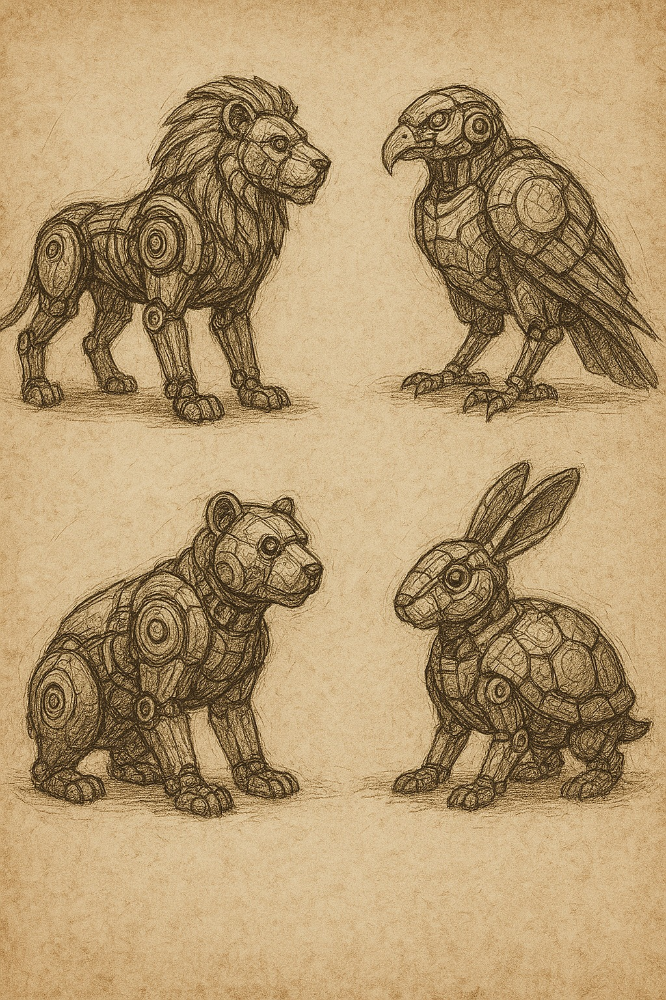
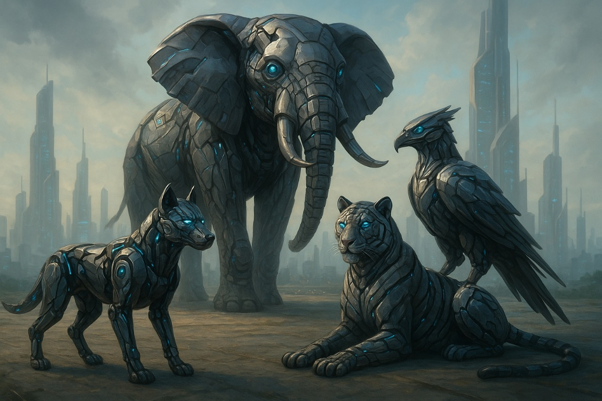

Proyectos Destacados

Prototipos Iniciales
Diseños preliminares que mezclan biotecnología, diseño y programación consciente.

Lince Guardián
El primer androide de E.C.O.A. Un lince simbólico que representa la unión entre tecnología y naturaleza.

Guardianes del Ecosistema
Androides especializados en monitorear, restaurar y proteger hábitats naturales.

E.C.O.A.
Una iniciativa que redefine el rol de la tecnología en la preservación planetaria.